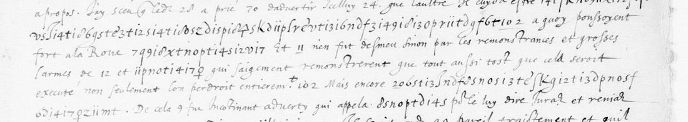
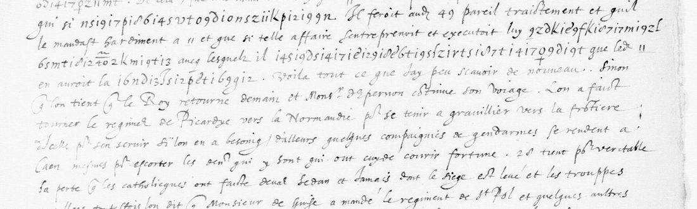

At a glanceKey from adjacent plaintext · complete
- The letter
- A court informant to the Duke of Nevers, 29 April 1588: news including the lifting of the sieges of Sedan and Jametz. DECODE gives the date as 1 January 1588, a placeholder.
- Where
- BnF fr. 3976 f. 62 (Nevers papers, 1588); catalogued on DECODE as a non-deciphered letter from an unknown sender.
- The cipher
- Names and words spelled in a cipher of letters and figures, plus bare code numbers. A sign is one character, or the figure 1 plus a character.
- How it was read
- None of Tomokiyo’s Nevers keys fitted and a ciphertext-only annealing solver found nothing. The key came from f. 131, the same informant’s letter of 4 June 1588, where a secretary wrote plaintext over each run.
- What it says
- Henri III was nearly resolved in council to have five or six leading Paris ligueurs thrown in the river, a fortnight before the Day of the Barricades; the letter gives Guise’s answer.
- Still open
- One name, one word and three code numbers.
- What was added
- The June letter that gave the key, f. 131, was itself deciphered in full on 2 October 2026: all 130 cipher signs and all eight code numbers.
01 The document
Fr. 3976 is a volume of Nevers’s papers for 1588, on Gallica as btv1b9060548h; f. 62 is view 111. The BnF’s piece-by-piece notice lists it as no. 30: “Lettre, avec chiffre, adressée au duc de Nevers, contenant entre autres nouvelles, celle de la levée du siège de Sedan et de Jametz. Ce 29 avril 1588.” The neighbouring pieces at ff. 56 and 60 are symbol ciphers from the cardinals of Bourbon and Guise, each with its decipherment. They use a different system.

4kd3si4ti3) follows “si”; the second line ends in the run for “leur entreprise a failly”. Image: Bibliothèque nationale de France, fr. 3976 f. 62r, via Gallica (btv1b9060548h, view 111).The last lines explain the method: “Il y a quelques motz au chiffre cy dessus que j’eusse plus aisement et briefvement mis par nombres, mais craignant que ne feussiez memoratif d’iceulx n’ayant ce chiffre, j’ay mieulx aymé estre plus long.”
02 The key, from the informant’s June letter
The same hand, cipher and monogram appear on f. 131 (4 June 1588) and f. 133 (6 June 1588). On f. 131 someone wrote the plaintext above the runs: “quelques mutins d’entr’eux”, “conte de Brissac”, “que s’il perissoit” (first read here as “pouvoit”; corrected on 2 October 2026 from the cipher, which has r and ss), “Roy”, and over the numbers 24 “nevers” and 11 “le Roy”. (The gloss over 24 was first taken here as “Navarre”; the letter of 6 June, deciphered later the same day, showed that 24 is Nevers.)
The Brissac gloss fixed the unit. 7 · i7 · id · i2 · t · 6 · s · 8 · g · p · i3 · f · 2 · X is fourteen signs for the fourteen letters of contedebrissac, where the i-like character is the figure 1 and pairs with the sign after it. With some fifteen values from f. 131, the runs of f. 62 began to give sense. Each run then added values to the key: 11 p n o t 14 17 ϙ after “les grosses larmes de 12 et” gave Villeroy; the next person named gave Bellièvre; …n ce royaume gave 9 = a; “chancellier et d’O” gave v = d. The alphabet is homophonic, and some signs are polyphonic (one sign, two or three letters): the curly 8 is b, u or v, 9 is a, h or r, and 3 is g or j. The hand’s 2 looks like a z, its 8 like a curly d and its 9 like a g, and the first transcription confused all three. The key is in key.md.
03 The decipherment
The deciphered runs are in bold. Numbers are the writer’s code numbers.
J’ay communiqué a 28 la lettre de [monogram]. Suivant laquelle je diz qu’il ne faudra pas, si Fougères(?) est encore icy, de luy representer les pertinentes raisons contenues en icelles, par lesquelles se congnoist assez que les advertissements de 24 ne peuvent avoir esté cause de leur ruyne comme ilz disent, ny de quoy leur entreprise a failly. Aussi la pluspart de ceulx qui en ont parlé n’entendoyent pas que celle de 24 feust semblable a l’autre, ny que ce que 24 feust venu eust esté a l’appetit de 9, ains seulement a la ruyne de 10, assistée de plusieurs gens de bien et d’autorité qui y estoyent fort disposez et s’i disposent encore tous les jours. Mais 28 et 70 estiment bien que 24 a assez de jugement pour n’embrasser telle entreprise que bien a propos.
J’ay sceu que led. 28 a prié 70 d’advertir icelluy 24 […]. Il cuyda estre resolu au conseil de prendre et jetter en l’eau cinq ou six des plus grans ligueurs de 102, a quoy poussoyent fort a la Royne, chancellier et d’O. Et 11 n’en fut desmeu sinon par les remonstrances et grosses larmes de 12 et Villeroy, qui saigement remonstrerent que tout aussi tost que cela seroit executé, non seulement l’on perdroit entierement 102, mais encore 20 des plus belles et fortes villes du royaume.
De cela 9 fut incontinent adverty, qui appela Bellièvre pour le luy dire, jurant et reniant que si le moindre de la ville l’avoit mal, il feroit aud. 49 pareil traitement, et qu’il le mandast hardiment a 11, et que si telle affaire s’entreprenoit et executoit, luy avoit a son commandement 40 mil hommes, avec lesquels il remueroit tant de messages(?) en ce royaume que led. 11 en auroit la plus petite part. Voila tout ce que j’ay peu scavoir de nouveau.

Translation of the core. The King was nearly resolved in council to seize and throw into the river five or six of the chief ligueurs of Paris, pressed to it by the Queen, the chancellor and d’O. Only the remonstrances and tears of 12 and of Villeroy stopped him: they argued that once it was done he would lose Paris and twenty of the finest towns of the kingdom as well. Guise (9) heard of it at once and sent for Bellièvre to tell him, swearing that if the least man of the town came to harm he would deal with 49 the same way. Bellièvre could tell the King so plainly. If the thing were attempted, Guise had forty thousand men at his command, and with them he would stir up so much in the kingdom that the King would be left with the smallest share.

Code numbers: 9 = the duc de Guise, 11 = the King and 24 = the duc de Nevers are glossed on f. 131, and 10 = the duc d’Épernon on ff. 131 and 139 (see the June letters). 102 = Paris follows from the context. 12, who wept with Villeroy, is probably Catherine de Médicis.
04 The letter that gave the key: f. 131, 4 June 1588
F. 131 (Gallica view 221; view 222 is f. 132, blank) is one page in the same hand, closed with the same monogram, written three weeks after the Day of the Barricades. It has eight cipher runs, 130 signs, and eight code numbers, and a decipherer of the time wrote the plaintext over every run and every number. On 2 October 2026 the page was transcribed whole and each run was checked sign by sign against the key of ff. 62, 133 and 139 (f131/decode.py). All 130 signs are deciphered by the key, none from context alone, and all eight runs agree with their glosses. Three values are new: a bare 1 is i (so the old two-character signs “1n” and “1e” are 1 + l and 1 + t, which leaves the readings of f. 62 unchanged), a b-like sign is y (once, in Roy, glossed), and h carries qu. The runs read as French throughout (33 of 33 words; the fr-1600-letters model gives −1.56 per character).
| run | deciphered | gloss of the time |
|---|---|---|
| 1 | quelques mutins d’entre eulx | quelques mutins d’entr… |
| 2 | conte de Brissac | conte de Brissac |
| 3 | a esté tué et que d’Elbeuf est au fort Saincte Caterine | est tué et que de l’Beuf est au fort St Catherine |
| 4 | que s’il perissoit | que s’il perissoit |
| 5 | perist avec luy | perist avec luy |
| 6 | [72] s’arme | Savoie s’arme |
| 7 | Roy | Roy |
| 8 | marquisat de Saluce | marquisat de Saluces |
The code numbers, all glossed: 9 = Guise, 10 = Épernon, 11 = le Roy (twice), 24 = Nevers (twice), 72 = Savoie, 73 = his ambassadeur.
4 de Juin 1588. Hier se fit une assemblée en l’hostel de ville des capitaines d’icelle ou quelques mutins d’entre eulx proposerent plusieurs choses assez mal a propos comme l’on dit. […] Il fut resolu qu’il se feroit aultre plus notable assemblée tant des corps et cours que des bourgeois pour en resouldre. […] Et sembleroit que sur ces entrefaictes 24 seroit bien a propos pres de 11.
Le secretaire de la poste m’a asseuré que le Roy a ceste nuict couché a Vernon pour de la aller a Rouen. Aulcuns ont voulu faire courir le bruit ce matin que le conte de Brissac a esté tué et que d’Elbeuf est au fort Saincte Caterine. […] Corbeil est tout environné des troupes de Monsr de Guise […] Et ay ouy dire a gens de creance qu’ilz scavoyent que 10 avoit dit a aulcuns de ses amis que s’il perissoit il vouloit que tout le Royaume perist avec luy. […] Ce 4 Juing.
Je croy que si 24 va veoir 11 il sera bon qu’il soit adverty que 72 s’arme, et que l’on a tiré par conjectures de son 73 qu’il est conseillé de ce faire en intention de tenir Roy en alarme et neantmoings luy offrir son ayde et service, mais a la charge de faire ses besongnes et praticquer s’il peult marquisat de Saluce. Partant seroit bon tenir les places bien pourveues.

Paris three weeks after the Barricades: the militia captains at the Hôtel de Ville moving to an apology to Henri III, then at Vernon on his way to Rouen; rumours about Brissac and the duc d’Elbeuf in the fort Sainte-Catherine at Rouen; the fort of Meulan invested by Biron and Aumont; Guise’s troops round Corbeil; Épernon gone to Loches, saying that if he perished the whole kingdom should perish with him. The postscript warns Nevers that the duke of Savoy is arming, while offering the King his help, to take the marquisate of Saluzzo; Charles-Emmanuel did so in October 1588. Two clear-text words are uncertain readings of the hand (contenante, praticquer); no cipher sign is open.
05 What failed first
- Tomokiyo’s Nevers keys in fr. 3995, nos. 10, 11, 16 and 18, and an alphabet on view 45 of that volume. None decrypts run 1.
- A ciphertext-only homophonic solver (simulated annealing) on about 440 characters, with letter, null and word-divider variants for the i-like sign. It collapsed to strings of e, n and t, because the unit was not yet known and the transcription was too noisy.
- The symbol ciphers of ff. 56 and 60, which come with decipherments. They belong to another system.
06 What remains uncertain
- Run 1: decrypted letter by letter as Fougères (grade C). This is a person at court, not identified.
- Run 18: messages (grade C) holds only if the sign 1r = g. That sign occurs once.
- Run 15, l’avoit mal: grade C.
- Code numbers 28, 49 and 70 are not identified; the informant’s number list is not in fr. 3995 as far as checked, and the glosses of ff. 131 and 139 (9, 10, 11, 24, 38, 72, 73, 98, 107) do not include them. 12 is identified by context only.
- F. 131: no cipher sign open. The b-like sign = y rests on one glossed occurrence.
- The June letters on ff. 133–134 (DECODE R3708) and f. 139 use the same key. They were deciphered later the same day in the write-up on the June letters.
Full texts
The transcription and the decryption of every document on this page, so that the reading can be used and checked. Short files are shown here; all are in the repository.
Paris, 29 April 1588, BnF fr. 3976 f. 62 (DECODE R3705)
A court informant writes to the Nevers household with the Paris news of late April 1588, a fortnight before the Day of the Barricades: Henri III was tempted in council to have five or six League leaders of Paris thrown in the water, was talked out of it by Villeroy and (probably) the Queen Mother, and Guise (9) answered that he had forty thousand men at his command.
Transcription
4kd3s14t13 ns11g14dq1ds otd14sl12gtJ14p1359421noy 9n214dq1dt6s10913fp1312s rs1d13vtypt1seb2d12k14pet s1213p6f1b1713s1d12 esnots1degtJ141ft 14tfknd911x17lftpo vsJ14t1d69ste3t12s14t1dos2d1sp1d4skd11psrevt1316ndf31491d13opr11td9f6t 7991dxtnopt14s12v17 11pnot1417y 206st13Jndfdsnos13teJkg12t13dpnosf 6d1417y211mt dsnoptd14s ns191791d614svto9d1ons211kp12199n 92dk1e9fk1d717m192l 6smt1d1240m2km19t13 14s19ds14171e1291det619sf21rts1d7t1417y9d19t 16nd13Jsi2pet1b9912
Decryption
R01 4kd3s14t13 fougeres? Il ne faudra pas, si [Fou?eres] est encore icy, de luy representer R02 ns11g14dq1ds leur ruyne ne peuvent avoir esté cause de [leur ruyne] R03 otd14sl12gtJ14p1359421noy leur entreprise a failly ny de quoy [leur entreprise a failly] R04 9n214dq1dt6s[10]913fp1312s a la ruyne de [10] assistee ains seulement [a la ruyne de 10 assistee] de plusieurs R05 rs1d13vtypt1seb2d12k14pet gens de bien et d autorite [gens de bien et d'autorité] qui y estoyent fort disposez R06 s1213p6f1b1713s1d12 et s i disposent [et s'i disposent] encore tous les jours R07 esnots1degtJ141ft telle entreprise pour n'embrasser [telle entreprise] que bien a propos R08 14tfknd911x17lftpo resolu au conseil Il cuyda estre [resolu au conseil] R09 vsJ14t1d69ste3t12s14t1dos2d1sp1d4skd11psrevt1316ndf3149 1d13opr11td9f6t de prendre et jetter en l eau cinq ou six des plus grans ligueurs de [de prendre et jetter en l'eau cinq ou six des plus grans ligueurs de] 102 R10 7991dxtnopt14s12v17 chancellier et d o a quoy poussoyent fort a la Royne, [chancellier et d'O] R11 11pnot1417y villeroy larmes de 12 et [Villeroy] R12 206st13Jndfdsnos13teJkg12t13dpnosf des plus belles et fortes villes mais encore 20 [des plus belles et fortes villes] R13 6d1417y211mt du royaume [du royaume] R14 dsnoptd14s bellievre qui appela [Bellievre] pour le luy dire R15 ns19179 1d614svto9d1ons211kp12199n le moindre de la ville avoit mal jurant et reniant que si [le moindre de la ville l'avoit mal?] R16 92dk1e9fk1d717m192l avoit a son comman luy [avoit a son comman-] R17 6smt1d12[40m]2km19t13 dement 40 mil hommes [-dement 40 mil hommes] avec lesquels il R18 14s19ds14171e1291det619sf21rts1d7t1417y9d19t remueroit tant de mes?a?es en ce royaume [remueroit tant de mes?a?es en ce royaume] que led. 11 R19 16nd13Jsi2pet1b9912 plus petite part en auroit la [plus petite part]
Decryption
# Copied verbatim from NOTES.md, section 'Reading' (22 Oct 2026): the f. 62 cipher runs (bold) in their clear context, with the code numbers. ## Reading The runs in their clear context (`reading.tsv`): > J'ay communiqué a 28 la lettre de [monogram]. Suivant laquelle je diz qu'il ne faudra pas, si **Fougères(?)** > est encore icy, de luy representer les pertinentes raisons contenues en icelles, par lesquelles se congnoist > assez que les advertissements de 24 ne peuvent avoir esté cause de **leur ruyne** comme ilz disent, ny de quoy > **leur entreprise a failly**. Aussi la pluspart de ceulx qui en ont parlé n'entendoyent pas que celle de 24 > feust semblable a l'autre, ny que ce que 24 feust venu eust esté a l'appetit de 9, ains seulement **a la ruyne > de 10, assistée** de plusieurs **gens de bien et d'autorité** qui y estoyent fort disposez **et s'i disposent** > encore tous les jours. Mais 28 et 70 estiment bien que 24 a assez de jugement pour n'embrasser **telle > entreprise** que bien a propos. J'ay sceu que led. 28 a prié 70 d'advertir icelluy 24. [...] Il cuyda estre > **resolu au conseil de prendre et jetter en l'eau cinq ou six des plus grans ligueurs de** 102, a quoy > poussoyent fort a la Royne, **chancellier et d'O**. Et 11 n'en fut desmeu sinon par les remonstrances et > grosses larmes de 12 et **Villeroy**, qui saigement remonstrerent que tout aussi tost que cela seroit executé, > non seulement l'on perdroit entierement 102, mais encore 20 **des plus belles et fortes villes du royaume**. De > cela 9 fut incontinent adverty, qui appela **Bellièvre** pour le luy dire, jurant et reniant que si **le moindre > de la ville l'avoit mal**, il feroit aud. 49 pareil traitement, et qu'il le mandast hardiment a 11, et que si > telle affaire s'entreprenoit et executoit, luy **avoit a son commandement 40 mil hommes**, avec lesquels il > **remueroit tant de messages(?) en ce royaume** que led. 11 en auroit **la plus petite part**. Voila tout ce > que j'ay peu scavoir de nouveau. Code numbers, from f. 131's glosses and this context: 9 = the duc de Guise (glossed "guis[e]" on f. 131, 2 Oct), 11 = le Roy (glossed), 24 = the duc de Nevers (glossed "nevers" on f. 131; first misread as Navarre, corrected from ff. 133-134, see `targets/r3708/`), 102 = Paris (context), 9 = Guise also fits here (threatens the King's council, commands 40 000 men), 12 = probably the Queen Mother; 10, 20, 28, 49, 70 not identified (20 is a count, "20 des plus belles villes"). This is the Paris news of late April 1588, a fortnight before the Day of the Barricades: Henri III tempted to have five or six League leaders of Paris drowned, talked out of it by Villeroy and (probably) Catherine, and Guise's threat in reply.
Translation
# BnF fr. 3976 f. 62 (DECODE R3705): the Paris informant, 29 April 1588: English translation Translation (Claude Opus 5.5, 23 Oct 2026) of the reading in `texts/f62_reading.md`: the cipher runs (**bold**) in their clear context. Code numbers are kept as numbers; by the glosses of f. 131 and the context, 9 = the duc de Guise, 11 = the King, 24 = the duc de Nevers, 102 = Paris, 12 = probably the Queen Mother; 10, 20 (a count), 28, 49, 70 not identified. Same marks: `(?)` doubtful, `[...]` a gap in the transcription, `[monogram]` the writer's sign. ## Translation I have shown 28 the letter of [monogram]. In accordance with which, I say that, if **Fougères(?)** is still here, one must not fail to set before him the pertinent reasons contained in it, by which it is clear enough that 24's warnings cannot have been the cause of **their ruin**, as they say, nor of why **their enterprise failed**. Also most of those who spoke of it did not mean that 24's [enterprise] was like the other, nor that 24's coming had been at the instance of 9, but only **for the ruin of 10, assisted** by many **honest men of authority** who were well disposed to it **and are disposing themselves to it** still every day. But 28 and 70 consider well that 24 has judgement enough not to embrace **such an enterprise** except very much to the purpose. I have learned that the said 28 has begged 70 to warn the said 24. [...] It was nearly **resolved in council to take and throw into the water five or six of the greatest Leaguers of** 102, to which the Queen, **the Chancellor and d'O** were strongly pushing. And 11 was dissuaded from it only by the remonstrances and great tears of 12 and **Villeroy**, who wisely pointed out that as soon as that was carried out, not only would 102 be lost entirely, but also 20 **of the finest and strongest towns of the kingdom**. Of this 9 was at once informed, who called **Bellièvre** to tell him so, swearing and blaspheming that if **the least man of the town were harmed**, he would give the said 49 like treatment, and that he should boldly send word of it to 11; and that if such a business were undertaken and carried out, he **had 40 thousand men at his command**, with which he **would stir up so many messages(?) in this kingdom** that the said 11 would have **the smallest part** of it. That is all the news I have been able to learn.
Paris, 4 June 1588, BnF fr. 3976 f. 131r
The same informant reports the Hôtel de Ville assembly of 3 June moving to an apology to the King, rumours from Rouen about Brissac and Elbeuf, Meulan invested by Biron and Aumont, Corbeil surrounded by Guise, and Épernon at Loches saying that if he perished he wanted the whole kingdom to perish with him; a postscript says Savoy is arming to take the marquisate of Saluzzo. Every run carries a gloss of the time, and all agree with the key.
Transcription
# BnF fr. 3976 f. 131r (Gallica btv1b9060548h canvas 221), 4 June 1588: transcription Clear text as written (abbreviations kept, punctuation light); cipher runs as [Rnn]; bare code numbers as <n>. Interlinear glosses of the time are in `ciphertext.txt` / `reading.tsv`. Canvas 222 = f. 132 (blank); f. 131v not imaged separately, the letter ends on f. 131r with the postscript. 4 de Juin 1588 Hier se fit une assemblee en l'hostel de ville des capitaines d'icelle ou [R01] proposerent plusieurs choses assez mal a propos comme l'on dit. Mais apres aultres desd. capitaines du corps de la court de parlement prirent la parolle et firent de tresbelles remonstrances contenante en somme l'obeissance et recongnoissance deue au Roy qui debvoit estre emprainte au cueur de ses subgectz mesmement es choses conformes et non repugnantes a la gloire de Dieu. Et que puis qu'il n'y avoit plus de Huguenotz dans Paris qu'il failloit demourer tous uniz en la religion et au debvoir envers son prince. Et qu'encore qu'en ce qui s'estoit passé les Parisiens ayent quelq. excuse legitime, neantmoings sa magesté l'ayant trouvé mauvaiz l'on ne peult moings que de luy en faire des excuses et le supplier de pardonner l'offence qu'il pourroit pretendre luy auroit esté faicte et que le plustost seroit le meilleur avec aultres belles remonstrances auxquelles tous d'une voix se conformerent. Mais parce que l'assemblée n'estoit que des cappitaines qui seulz ne pourroyent pas adviser ce qui seroit bon de faire envers le Roy, il fut resolu qu'il se feroit aultre plus notable assemblée tant des corps et cours que des bourgeois, pour en resouldre. Tellement que si ceste resolution n'est rompue il semble que voila ung tresbeau commancement. Et sembleroit que sur ces entrefaictes <24> seroit bien a propos pres de <11>. Le secretaire de la poste m'a asseuré que le Roy a ceste nuict couché a Vernon pour de la aller a Rouen. On aulcuns ont voulu faire courir le bruit ce matin que le [R02] [R03]. Vous avez sceu que celuy qui commandoit dans le fort de Meullan contre la promesse qu'il avoit faicte au Roy a trouvé moyen de faire sortir ceulx dud. fort qu'il pensoit estre affectionnez a sa magesté et au lieu y en a faict entrer quelq. petit nombre d'aultres et avoit mandé a <9> luy en envoyer d'aultres comme l'on dict qu'il estoit party 160 harquebuziers de ceste ville pour y aller. Mais ilz ont esté empeschez d'y entrer parce que sa magesté scachant ceste nouvelle fit incontinant investir la place par messrs les mareschaulx de Biron et d'Aumont. Nous ne scavons encore ce qui en sera advenu ou pourra advenir. Corbeil est tout environné des troupes de Monsr de Guise, a l'occasion de quoy les habitans dud. lieu envoyé vers monsr de Guise pour le supplier de les faire retirer mesmes que sur les bruitz que l'on a faict courir qu'ilz pourroyent empescher les vivres de venir a Paris. Ilz promettoyent comme telle estoit leur intention de favoriser la descente desd. vivres &c. Surquoy l'on m'a asseuré que led. Sr a faict responce qu'il fault qu'ilz recoivent dans leur ville ung gentilhomme des siens [et lors, struck] sans aultre et lors il fera retirer ses troupes. On tient pour certain que Mr d'Espernon n'est allé qu'a Loches pour recevoir les forces de Lavardin et aultres de Poictou pour retourner trouver le Roy. Et ay ouy dire a gens de creance qu'ilz scavoyent que <10> avoit dit a aulcuns de ses amis [R04] il vouloit que tout le Royaume [R05]. Voila tout ce qui me peult ressouvenir avoir apris depuis mes dernieres d'hier. Ce 4 Juing. [monogram] Je croy que si <24> va veoir <11> il sera bon qu'il soit adverty que <72> [R06] et que l'on a tiré par conjectures de son <73> qu'il est conseillé de ce faire en intention de tenir [R07] en alarme et neantmoings luy offrir son ayde et service. Mais a la charge de faire ses besongnes et praticquer s'il peult [R08]. Partant seroit bon tenir les places bien pourveues. [monogram]
Transcription
# BnF fr. 3976 f. 131r, Paris informant to the Nevers household, 4 June 1588. Gallica btv1b9060548h canvas 221. # Conventions of targets/r3708/ciphertext.txt: one run per line, signs space-separated; a sign is one character or # "1"+character; E = epsilon-like e (t), J = long J-like sign, Z = z, <n> = underlined code number inside a run, # # = a sign struck through by the writer. A bare 1 (no following character joined to it) = i. # Transcribed 2 Oct 2026 from the IIIF full image at native resolution. G01 1s t n h s 13 19 d 12 p J f 6 t 1d 12 14 t 5 d o c G02 7 17 1d 12 t 6 5 8 g p 13 f 2 X G03 9 5 13 E t 12 d s t E h s v s n y t d f s f 12 9 d 4 k g E f z p l 7 E t 7 9 12 5 14 1 J t G04 h s 13 1 n 16 t 14 p 13 f 17 1 E G05 # J t 14 1 f E 9 d 5 7 o d Q G06 <72> 13 9 14 19 5 G07 14 17 b G08 19 9 14 h p f z E 6 5 13 9 o d 7 5
Decryption
# BnF fr. 3976 f. 131r: the Paris informant, 4 June 1588
Gallica `btv1b9060548h` canvas 221 (f. 131r; canvas 222 is f. 132, blank, so the letter is one page). Not a DECODE
record. Same hand, cipher and monogram as f. 62 (R3705, this folder), ff. 133-134 (R3708) and f. 139
(`targets/r3708/`). Transcribed and read 2 Oct 2026.
Files: `transcription.md` (whole clear text with run markers), `ciphertext.txt` (8 runs G01-G08), `reading.tsv`
(reading, context, the contemporary gloss), `decode.py` (sign-by-sign check against the key, blind decode, LM score).
Images in `../img/` (git-ignored): `c221.jpg` full page, crops `z*`, `y*`, `p*`, `L*`.
## Measurement
`python targets/nevers1588/f131/decode.py`:
* 130 cipher signs in 8 runs (plus 1 sign struck by the writer and 1 code number inside a run): **130/130 read by
the key**, every one consistent with the key of ff. 62/133/139 plus three single values new here (bare 1 = i,
b-like sign = y, h carrying "qu"). No sign is read from context alone.
* Every run agrees with its interlinear decipherment of the time (8/8).
* Words of the runs: 33/33 read as French sense; 30/33 occur in the `fr-henri4` corpus vocabulary (Caterine,
perissoit, perist do not; all three are glossed by the decipherer). `fr-1600-letters` LM: -1.56 per character
over the runs as read (real text -1.1 to -1.8, gibberish about -6).
* Code numbers: 9, 10, 11 (twice), 24 (twice), 72 (inside G06), 73, all glossed above the line: **8/8 identified**.
* Read share of tokens: 100% (130 signs + 8 code tokens).
The blind decode (first key candidate for every sign, no reading used) already gives "quelques mbtipf dentreeblx",
"conte de bgisfac", "que sil perisfoit", "marquifat de salbce": the polyphonic d/δ (u or b), f (s or f) and g (r or g)
are what the reading resolves.
## The runs
| run | signs | reading | gloss of the time |
|---|---|---|---|
| G01 | 1s t n h s 13 19 d 12 p J f 6 t 1d 12 14 t 5 d o c | quelques mutins d'entre eulx | quelques mutins d'entr... |
| G02 | 7 17 1d 12 t 6 5 8 g p 13 f 2 X | conte de Brissac | conte de Brissac |
| G03 | 9 5 13 E t 12 d s t E h s v s n y t d f s f 12 9 d 4 k g E f z p l 7 E t 7 9 12 5 14 1 J t | a esté tué et que d'Elbeuf est au fort Saincte Caterine | est tué et que de l'Beuf est au fort St Catherine |
| G04 | h s 13 1 n 16 t 14 p 13 f 17 1 E | que s'il perissoit | que s'il perissoit |
| G05 | (struck sign) J t 14 1 f E 9 d 5 7 o d Q | perist avec luy | perist avec luy |
| G06 | <72> 13 9 14 19 5 | Savoie s'arme | Savoie s'arme |
| G07 | 14 17 b | Roy | Roy |
| G08 | 19 9 14 h p f z E 6 5 13 9 o d 7 5 | marquisat de Saluce | marquisat de / Saluces |
The 22 Sept notes gave the G04 gloss as "que s'il pouvoit"; the cipher has 14 (r) and 13 f (ss): the gloss is "que
s'il perissoit", which the next run ("perist avec luy") confirms.
## The letter
> 4 de Juin 1588. Hier se fit une assemblée en l'hostel de ville des capitaines d'icelle ou **quelques mutins
> d'entre eulx** proposerent plusieurs choses assez mal a propos comme l'on dit. Mais apres, aultres desd. capitaines
> du corps de la court de parlement prirent la parolle et firent de tresbelles remonstrances contenant en somme
> l'obeissance et recongnoissance deue au Roy [...] et que puis qu'il n'y avoit plus de Huguenotz dans Paris il
> failloit demourer tous uniz en la religion et au debvoir envers son prince [...] l'on ne peult moings que de luy en
> faire des excuses et le supplier de pardonner l'offence [...] Il fut resolu qu'il se feroit aultre plus notable
> assemblée tant des corps et cours que des bourgeois pour en resouldre. [...] Et sembleroit que sur ces entrefaictes
> 24 [Nevers] seroit bien a propos pres de 11 [le Roy].
>
> Le secretaire de la poste m'a asseuré que le Roy a ceste nuict couché a Vernon pour de la aller a Rouen. Aulcuns
> ont voulu faire courir le bruit ce matin que le **conte de Brissac a esté tué et que d'Elbeuf est au fort Saincte
> Caterine**. Vous avez sceu que celuy qui commandoit dans le fort de Meullan [...] avoit mandé a 9 [Guise] luy en
> envoyer d'aultres [...] sa magesté [...] fit incontinant investir la place par messrs les mareschaulx de Biron et
> d'Aumont. [...] Corbeil est tout environné des troupes de Monsr de Guise [...] On tient pour certain que Mr
> d'Espernon n'est allé qu'a Loches pour recevoir les forces de Lavardin et aultres de Poictou pour retourner trouver
> le Roy. Et ay ouy dire a gens de creance qu'ilz scavoyent que 10 [Épernon] avoit dit a aulcuns de ses amis **que
> s'il perissoit** il vouloit que tout le Royaume **perist avec luy**. [...] Ce 4 Juing. [monogram]
>
> Je croy que si 24 [Nevers] va veoir 11 [le Roy] il sera bon qu'il soit adverty que 72 [Savoie] **s'arme**, et que
> l'on a tiré par conjectures de son 73 [ambassadeur] qu'il est conseillé de ce faire en intention de tenir **Roy** en
> alarme et neantmoings luy offrir son ayde et service, mais a la charge de faire ses besongnes et praticquer s'il
> peult **marquisat de Saluce**. Partant seroit bon tenir les places bien pourveues. [monogram]
Paris three weeks after the Barricades: the Hôtel de Ville assembly of the militia captains moving to an apology to
Henri III (then at Vernon on his way to Rouen); rumours about Brissac and the duc d'Elbeuf at the fort Sainte-Catherine
of Rouen; the Meulan fort, invested by Biron and Aumont; Guise's troops round Corbeil; Épernon gone to Loches. The
postscript warns Nevers that the duke of Savoy is arming, under cover of offering help to the King, to take the
marquisate of Saluzzo, which Charles-Emmanuel did in October 1588.
## Gaps
None in the cipher. Two clear-text words are uncertain readings of the hand ("contenante", "praticquer"); they do
not affect the runs.Decryption
G01 quelques mutins d entre eulx des capitaines d'icelle ou [quelques mutins d'entre eulx] proposerent gloss: quelques mutins d'entr(e eulx) G02 conte de brissac le bruit ce matin que le [conte de Brissac] gloss: conte de Brissac G03 a este tue et que d elbeuf est au fort saincte caterine [a esté tué et que d'Elbeuf est au fort Saincte Caterine]. Vous avez sceu gloss: est tue et que de lBeuf est au fort St Catibur(ine) G04 que s il perissoit de ses amis [que s'il perissoit] il vouloit gloss: que s'il perissoit G05 perist avec luy que tout le Royaume [perist avec luy] gloss: perist avec luy G06 <72> s arme qu'il soit adverty que [<72> s'arme] gloss: Savoie s'arme G07 roy en intention de tenir [Roy] en alarme gloss: Roy G08 marquisat de saluce praticquer s'il peult [marquisat de Saluce] gloss: marquisat de / saluces
Translation
# BnF fr. 3976 f. 131r: the Paris informant, 4 June 1588: English translation Translation (Claude Opus 5.5, 23 Oct 2026) of "The letter" in `f131/reading.md`: the cipher runs (**bold**, each agreeing with the decipherment of the time) in their clear context. Code numbers with the glosses in brackets, as there. **An excerpt** of the clear text: `[...]` marks clear text not transcribed in the reading. French. ## Translation 4 June 1588. Yesterday an assembly of the captains of the town was held at the Hôtel de Ville, where **some mutineers among them** proposed several things rather ill to the purpose, as people say. But afterwards others of the said captains, of the body of the court of Parlement, took the floor and made very fine remonstrances, containing in sum the obedience and acknowledgement due to the King [...], and that, since there were no more Huguenots in Paris, all must remain united in religion and in duty towards their prince [...]; one can do no less than make excuses to him for it and beg him to pardon the offence [...]. It was resolved that another, more notable assembly would be held, both of the bodies and courts and of the burgesses, to decide on it. [...] And it would seem that in the meantime 24 [Nevers] would be very much to the purpose near 11 [the King]. The secretary of the post has assured me that the King slept last night at Vernon, to go from there to Rouen. Some tried to spread the rumour this morning that **the Count of Brissac has been killed and that d'Elbeuf is in the fort of Sainte-Catherine**. You will have learned that the man who commanded in the fort of Meulan [...] had sent word to 9 [Guise] to send him others [...]; His Majesty [...] at once had the place invested by Messieurs the Marshals de Biron and d'Aumont. [...] Corbeil is all surrounded by the troops of Monsieur de Guise [...] It is held for certain that Monsieur d'Épernon has gone to Loches only to receive the forces of Lavardin and others of Poitou, to return and join the King. And I have heard trustworthy people say that they knew that 10 [Épernon] had said to some of his friends **that if he perished** he wanted the whole kingdom **to perish with him**. [...] This 4th of June. [monogram] I believe that, if 24 [Nevers] goes to see 11 [the King], it will be well that he be warned that 72 [Savoy] **is arming**, and that it has been drawn by conjecture from his 73 [ambassador] that he is advised to do so with the intention of keeping the **King** in alarm and nevertheless offering him his help and service, but on condition of doing his own business and negotiating, if he can, the **marquisate of Saluzzo**. Therefore it would be well to keep the places well provided. [monogram]
Key: key.md
07 Sources
- BnF Français 3976, Gallica f. 62 (view 111), f. 131 (view 221), f. 133 (view 223).
- DECODE record R3705.
- BnF fr. 3995 (Nevers’s cipher collection), Gallica
btv1b525085665. Satoshi Tomokiyo, “Ciphers of the Duke of Nevers”, cryptiana.web.fc2.com.
Transcription, key, reading table and scripts: targets/nevers1588/ in the repository.